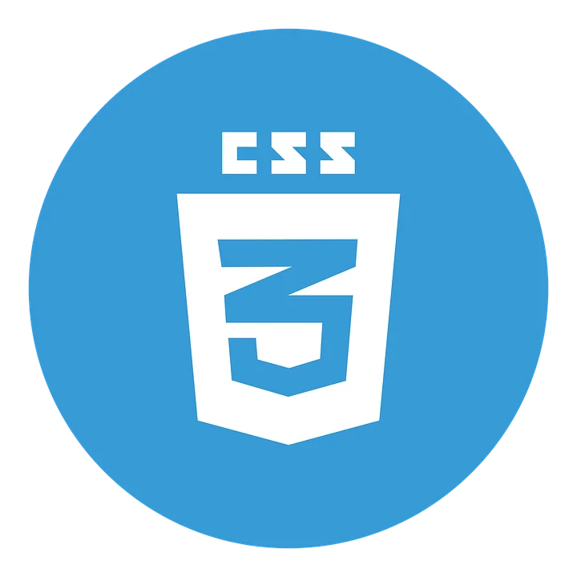

Sign-up Form
Sign-up form project from The Odin Project in the Forms section of the Intermediate HTML and CSS course.
Jonas
Hi there,
Jonas (@jbj)
Sign-up form project from The Odin Project in the Forms section of the Intermediate HTML and CSS course.
Calculator project from The Odin Project in the JavaScript Basics section of the Foundations course.
Etch-a-Sketch project from The Odin Project in the JavaScript Basics section of the Foundations course.
Rock Paper Scissors project from The Odin Project in the JavaScript Basics section of the Foundations course.
Lading page project from The Odin Project in the Flexbox section of the Foundations course.
Recipes project from The Odin Project in the HTML Foundations section of the Foundations course.
Finishing this project will mark the end of my time with the Intermediate HTML and CSS course. Afterwards, I will move on to the JavaScript course.
For me, the most interesting part of web development is experimenting with unique solutions and making novel design decisions.
The goal I intend to achieve through The Odin Project is to become a full-stack developer, giving me the freedom to create and experiment with any project ideas I might come up with.

@theodinproject
The Odin Project

@html
Structure of the Web

@css
Styling of the Web

@javascript
Interactivity of the Web